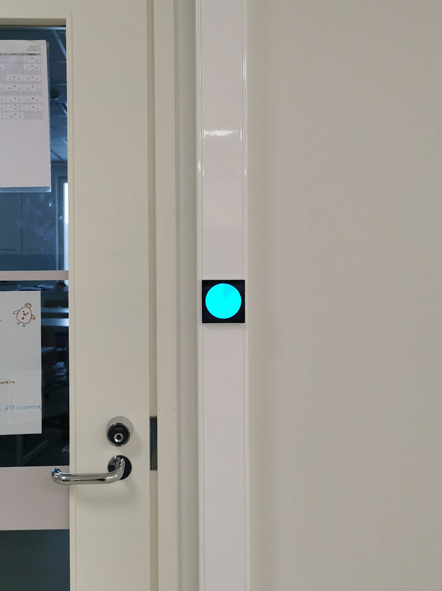

Valkeala multipurpose building, Kouvola
2024
A site-specific interactive installation
Round LCD-displays, minicomputers, small touch displays, wireless access points, fiber-optic network of the
building
The starting point of the proposal was to create a playful work of art that connects different user groups of
the multi-purpose building, mainly preschool and school students of different ages. The purpose was to
emphasize the importance of cooperation by giving students the opportunity to play "on the same side", instead
of playing against each other. The networking of students of different ages through the artwork spread around
the building provides a good breeding ground for the school's collective spirit and for uniting. This common
spirit is above all symbolic and conceptual, and of course we do not assume that thanks to the essentially
growing work of interacting with preschoolers and middle school students.
On different sides of the building there are small learning halls and multipurpose spaces for students to
gather. Such lobby spaces have been given their own signature color from the seven basic colors of Goethe's
color theory, instead of choosing the system most commonly used today. The starting point is to familiarize
the students with the theories related to color theory and to show that the models have changed over the
years. Each color-coded lobby space has 3 four-inch touch screens, embedded in e.g. the light switches hidden
behind the doors. A small computer is permanently connected to the touch screen with a wireless connection.
The devices were originally designed, for example, to control the air conditioning in an apartment.
In the basic mode, the screens dimly light up the signature color of the respective lobby, until one of these
21 small screens brightens and the abstracted stopwatch starts counting the decreasing time. Although there
are three screens in each lobby, only one of them is activated at a time. If someone manages to touch the
screen before the stopwatch has run out, the corresponding screen in some part of the house will start to
behave in the same way until someone in turn touches that screen. And so on, until all 21 screens have been
played, and the game moves to the next, slightly faster level. If, on the other hand, the activated screen is
not touched before the time has elapsed, the game round ends and the system returns to the initial state.

Seven round, 600 mm diameter LCD screens are hung in a circle on the wood-paneled wall of the school's
combined dining/party hall. In our opinion, the location is the most complete and the best place in the space,
even though on sunny afternoons, direct sunlight comes through the adjacent glass wall on the wall for a
while. Each screen represents one of the color-coded lobby spaces mentioned above, and is wirelessly connected
to the three small touch screens there. When a touch screen is activated, the connected round screen in the
dining/party hall is also activated at the same time. Also on this screen, an abstracted stopwatch rotates,
showing the remaining time, while its color indicates where the blinking touch screen is located in the
building. When the flashing one is touched and the next touch screen is activated, the round screen of the
dining/party hall connected to it is also activated. The non-active screens, on the other hand, show in block
diagram form at which stage of the game round and at which level we are. You can participate in the game by
consciously looking for an activated screen, or more passively, by accidentally touching it while passing by.
Not only do the screens in the dining/party hall allow you to follow the progress of the game, they also act
as an abstract piece of light art that changes randomly.